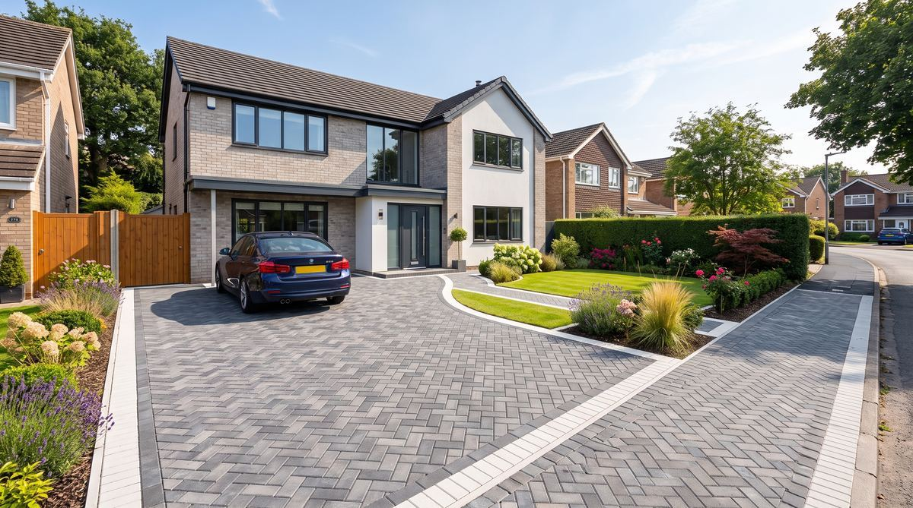

Dropped Kerb Installation in Bournemouth
Planning a new driveway that crosses the pavement? You’ll need a dropped kerb — we handle the BCP Council permission process and installation from start to finish.
Quick answer: yes, a dropped kerb requires separate permission from BCP Council even if your driveway itself doesn't need planning permission — we handle the application and installation together as part of your quote.
We Handle the Council Process For You
- Advice on whether your project needs a dropped kerb
- Guidance through the BCP Council application & permission process
- Professional kerb lowering and footway reinstatement
- Coordinated with your driveway installation for a single, tidy job
- Fully insured, council-standard workmanship

Dropped Kerb Installation in Bournemouth FAQs
Yes — lowering a kerb to cross a public footway requires permission from BCP Council, even if the driveway itself doesn’t need planning permission.
Costs vary based on kerb length, footway width and any utilities beneath the pavement. We’ll give you a clear, fixed figure covering both the council fee and installation as part of your free quote.
Timescales vary by council workload — we’ll give you a realistic estimate when we submit your application and keep you updated throughout.
No — dropped kerb work on a public footway must be carried out by an approved contractor to council standards. We handle the full process for you.
Occasionally, usually due to visibility, nearby trees, utilities or on-street parking restrictions — we'll flag any likely issues before you apply.
Related Pages
Get Help With Your Dropped Kerb
From council permission to installation — one team, one quote.